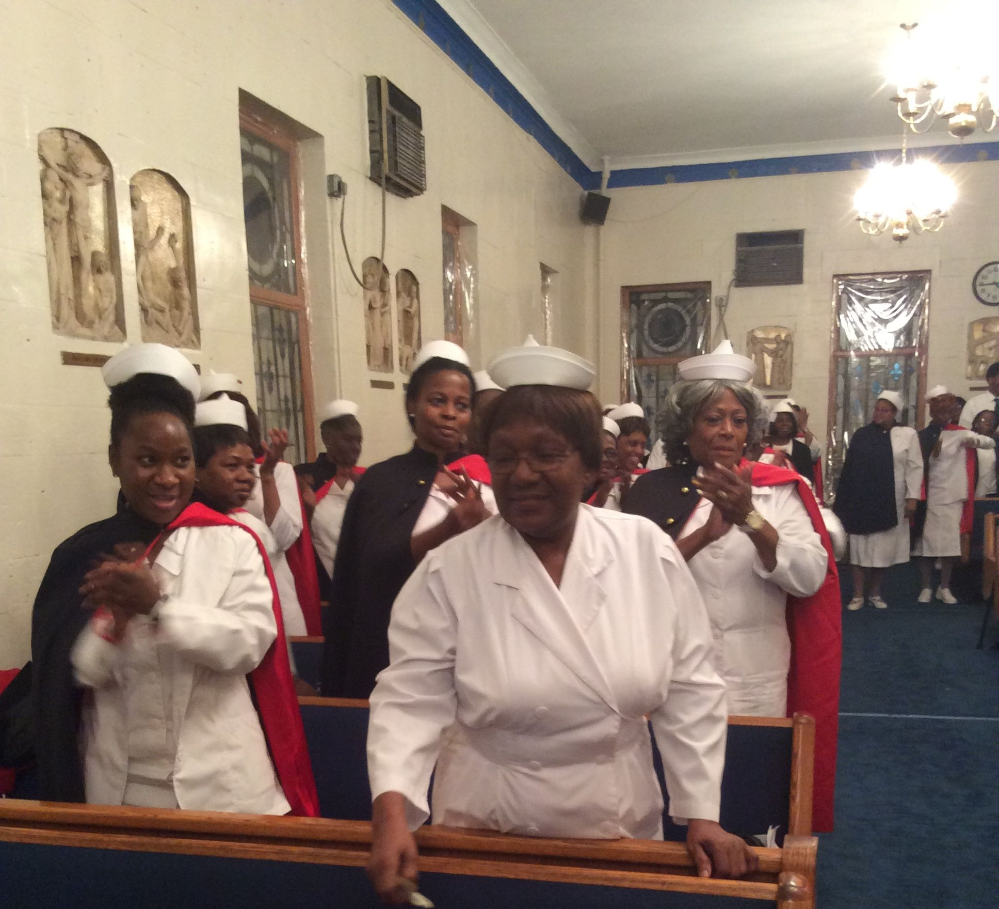
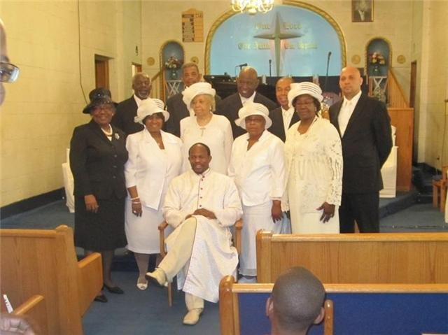
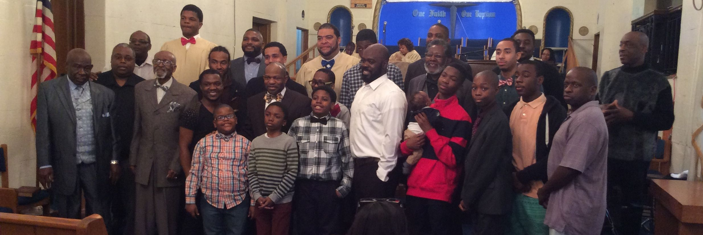
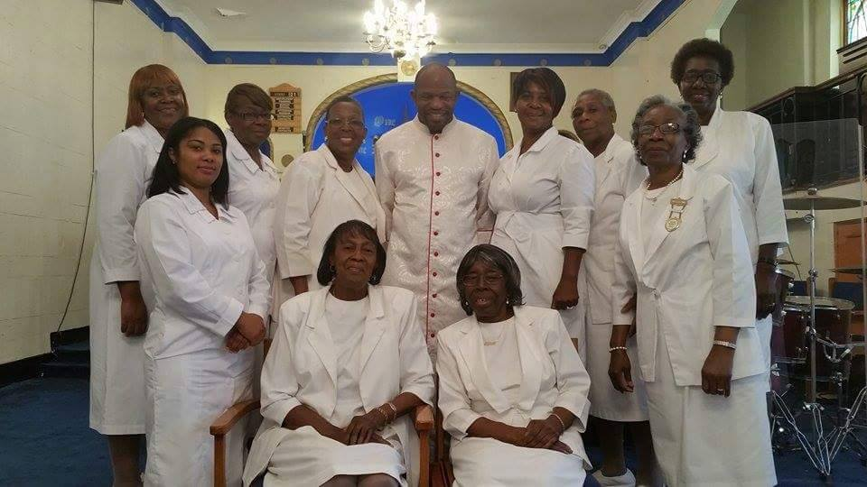
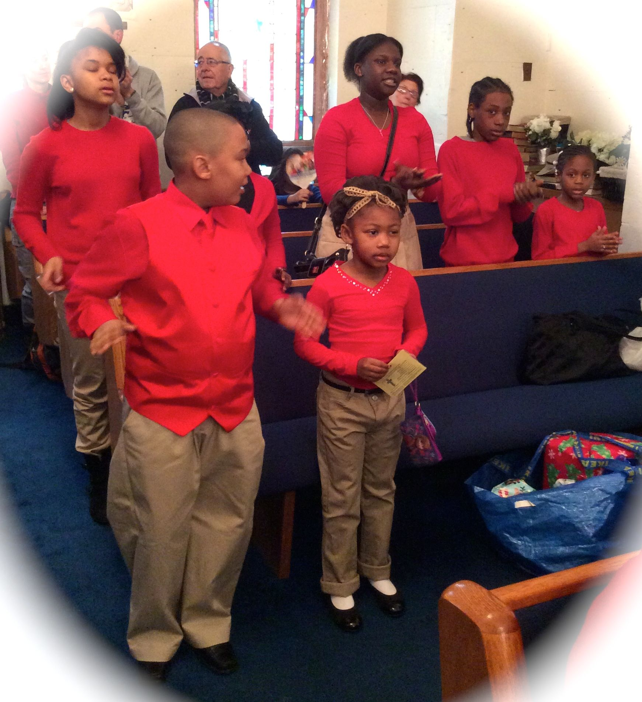

ABOUT US
Our Church
Greater Tabernacle Baptist Church is located in the Hamilton Heights section of Harlem at 340 Convent Avenue on the corner of 144th Street. Established in 1954, we are a small church with a big heart. Our doors are open to any and all who want to know more about Jesus Christ and serve Him to the fullest. We have several ministries, from singing and praise dancing to community outreach. We also have an awesome Christian Education Ministry. Join us on Wednesdays at 6:30pm for Bible Study and Prayer Service and on Sundays at 11:00am for morning worship and see for yourself!
Our Pastor
Rev. Jeffrey M. Crenshaw, a native New Yorker, was installed as our pastor in September, 2005. Determined to engage in a Ministry that Makes a Difference, Pastor Crenshaw's ministry focus has been "Developing a Spirit of Excellence" so that the 'Greater Tab' family would be fully equipped for service and stand ready to effectively impact their surrounding community, city and state for Christ. Recognizing the need for local ministries to work together, Pastor Crenshaw is actively engaged with several baptist organizations and he serves on the Board of Directors of the Harlem Congregations for Community Improvement (HCCI), a world renown organization instrumental in providing affordable housing in the Harlem Community. Pastor Crenshaw loves the Lord with all his heart, mind and soul. His enthusiasm for God and the things of God is evident in his preaching, teaching and outlook on life.
Our Ministries
| Pastor Crenshaw | Ministries | Nurses | Diaconate | Men | Ushers | Youth |
 |
 |
 |  |  |  |  |

{kind=link}
{kind=link}
{kind=link}
{kind=link}
{kind=link}